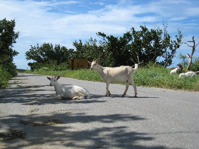
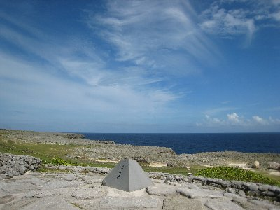
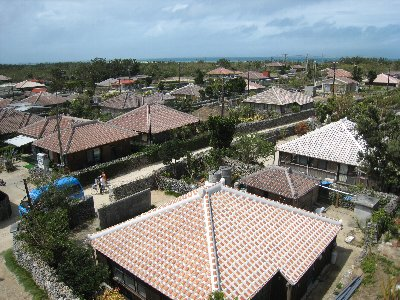
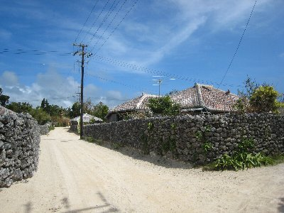
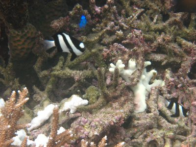
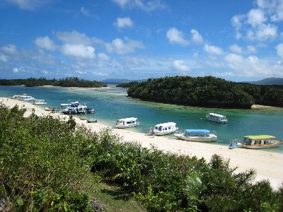
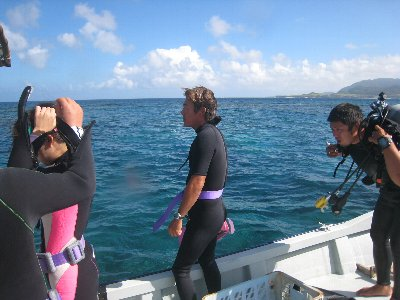
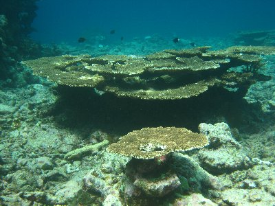

八重山諸島周遊 | 2007年9月 |
|---|---|
| 遅い夏休みを（無理やり）頂き、どこか遠くを一人で旅をしたくて、日本の最南端を目指して石垣島（八重山諸島）に行きました。 名古屋から飛行機で直行便も有るけれど、羽田からの乗り継ぎ便の方がツアー料金が安くなる為、東京から出発です。 那覇で乗り換えてお昼に到着予定でしたが、天候が着陸に適さないようで30分石垣島上空待機。 その後、着陸を諦めて那覇に引き返す事になりました。 以前、北海道でも同じように引き返して空港で夜を空かすと言う、痛い目に会っているので（引き返した場合は欠便扱いとなり、料金の返金か、次便への空席待ちとなるので、満席に近い石垣島行きは厳しい）、何とか本日中には石垣島にたどり着きたいと待っていたら、夕方に臨時便が出る事になり、なんとか宿泊予定のホテルにたどり着けました。 | |
 波照間島 右の小屋？が宿です |  波照間島島内にはヤギが・・ |
| やはり台風通過直後（前日まで吹き荒れていた）は、余波もまだまだ有るようです。 翌日は快晴。 滞在中の予定を一切立てていないので、取り合えず日本最南端（有人島）の波照間島に渡ってみる事にして港に向いました。 船を待っている間に、調べてあった民宿等に本日の宿を打診して見るが、どこも満室。 八重山諸島は、過去のある事件の為に、キャンプ場以外での野営禁止となっており、波照間島はその舞台であったために、車中泊等も禁止となっており、宿が取れないと追い返される事になってしまいます。 船のチケットは取ったので、取り合えず島に渡る事にしました。 高速艇は波間を飛ぶように上下にバウンドしながら1時間で到着。小さな小さな港です。 港には船のチケット売り場と売店を兼ねた、小さな建物がぽつんと有るだけで、期待していた観光案内所等無く、取り合えず人家が集まっている方向に歩き始めました。 軒先で本日の宿泊手続きを取っている人達を見かけ、ダメ元で声を掛けて見たところ（先ほど電話では満室と言われたので）、相部屋ならと言う事で泊れる事になりました！ ラッキー！ 小さなプレハブ小屋に二段ベットが置いてある5人部屋。 先に来ていた人たちに挨拶をして、バイクをレンタルし、島一周に出発。 | |
 波照間島をバイクで |  日本の最南端（有人島として） |
| 島周遊道路を走ると、さとうきび畑や山羊等と遭えるし、風がとっても気持ち良いんです。 夕食には幻の泡盛「泡波」が飲めるし、仲良くなった同部屋の人達と会話が弾みました。夕食後は、部屋の外にある板の間（ベニヤ貼りだが）で、近くの部屋の人達も交えて団らん。 楽しくて時間が経つのを忘れるくらい。 夜風が気持ちよく、泡盛も美味しくてのんびり過ごせました。 翌日も晴れ。午前中は同部屋の人達と、ニシ浜に泳ぎに行き、熱帯魚を観賞。 ニモ（カクレクマノミ）にも会えました！ ってシュノーケルで見る事が出来るなんて思わなかった。 | |
 ニシ浜にて |  竹富島 |
| 午後の便で私は石垣島に戻り、そのまま本日宿泊予定の西表島のキャンプ場へ。 数日前に台風で直撃を受け、一番被害が有ったのが西表島。 上陸しキャンプ場まで歩く道すがら、コンクリート製の電柱は折れ、草木は折れ曲がり、散々足る状態です。 キャンプ場で受付をしようとしたら、場内は様々なモノが飛び散り危険な状態の為、受付できないと断られてしまいました！ なんてこった、まさかキャンプ場までもが！ 隣のキャンプ場にも声を掛けるも同じ状態。 仕方なく、石垣島に引き返す事にしました。滞在時間2時間。 寂しい。 その日は石垣島繁華街にて、一泊1800円の安宿に宿泊。 翌日も晴れ。 そのまま石垣島滞在も悔しいので、船で10分の竹富島へ渡りました。 宿に連絡するもやはり満室。 まあ、竹富島は小さく、船の便数も30分おきに有るので、日帰り可能なので良いのですが。 | |
|  竹富島 |  竹富島 |
| 竹富島では自転車をレンタルして、南国雰囲気たっぷりの街並みを堪能。 ここで暮らしている人たちって、どんな時間が流れているんだろうと、考えてしまいます。 １ヶ月ココで暮らしたら、人生変わるかな。 さて、本日の宿は石垣島米原キャンプ場です。 バスで1時間。 米原ビーチに面している市営キャンプ場。 到着後テントを設営していると、車椅子に乗った日に焼けたおじさんが声を掛けてきました。長期滞在者らしく（いや、かなりの数の長期滞在者がいるらしい）、先日の台風で割れたコップで足裏を切ってしまったらしいです。 話をしていて周辺には食料品を売っている店は無いのが分かり、現地で全て揃えようと考えていた私としては、ちょっと焦りが入りました。 持っている食料はパン１個とビスケット。 17時まで営業しているとんかつ屋が一件有ると言うので、急いで行きました。 ミックスフライ定食とビールを注文し、なんとか夕食抜きを免れる事が出来ました。 ここは安い割にボリュームもあり美味しいです。 | |
 石垣島 米原ビーチキャンプ場 |  米原ビーチ海中 |
| 早めの夕食後に、まだ空が明るかった為、シュノーケリングで米原ビーチを潜って見た。 熱帯魚は沢山見れたけど、サンゴ礁がだいぶ白化している感じで、死んじゃってるのかな？ 翌日は快晴。 朝から米原ビーチでシュノーケリング。干潮なのか、珊瑚の頭が出ちゃってる感じで、水の中は泳ぎにくい。 少ない食料で腹を満たし、バスで観光地の川平湾へ。 川平湾は写真の通りに綺麗な色をしていて、ココで泳げないのが残念！（海流の流れが複雑とかで遊泳禁止） 観光地だから食料品でも売っているかと思ったら、意外に何も無く（裏路地とかに有るんだろうけど発見出来ず）、昼食とって泡盛を買って帰路へ。 本日も米原キャンプ場。 ひと泳ぎして再び昨日のとんかつ屋へ。 だって他に店無いんだもん。でも、とんかつ好きだし問題なし。 | |
|  川平湾 |  夕食のトンカツ定食 |
| さすがに昨日の今日なので、お店の人も覚えていて「キャンプ場に泊ってるんですか？」って。オフコース！ ２日続けての揚げ物でも全然ＯＫ！ とんかつ定食とビールを注文。 やっぱ揚げ物にはビールだな〜〜 夕食後、日が沈んでいく海岸で、波の音を聞きなら泡盛を飲みつつ、ゆっくりと日が沈むのを眺めていました。 都会ではないので他に音は無く、オレンジ色から群青色に変わる空を、ボーーーと何も考えず過ごす時間。 良いですね。 普段は時間を気にして行動している人にとって、ココは別の時間、別の空間って気がします。 近くの海では無い、知らない場所と言うのも、そんな感傷に浸らせてくれるのかも知れません。 | |
 米原ビーチ夕暮れ |  ボートダイビング |
| 翌日は晴れ。 本日は一日体験ダイビングに申し込みをしていて（昨日予約）、キャンプ場まで迎えに来てもらいました。 潜る場所は島の北側で、午前１本、午後１本と言う具合です。 船からのダイブは初めてです。 私のほかに、親子が一組。親父さんと娘だそうで、既に体験ダイビングは数回経験が有り、マスクやインナーも自前でした。（私もマスクは自前。度入りでないと見えない） 珊瑚の海は想像どおりに美しく、魚もホントに沢山見る事が出来ました。 海も蒼く透き通っていて綺麗で、石垣島に来たらやらないと損ですね。 | |
|  |  |
| 夕方に繁華街まで送ってもらい、本日の宿一泊1500円へチェックイン。ドミトリーです。 今日は、偶然にも石垣島に立ち寄っている地元の友人と合流。 彼は船乗りなので日本全国港が有るところには出没するのですが、たまたま連絡したら石垣島に来ているとの事だったので、じゃあ飲もうかって事になったのです。 日本の果てで友人と会えるって凄いよね。 最終日。午前中には出発なので、空港に移動するのみ。 結局、台風通過直後なのに、天候も崩れずいい天気に恵まれました。小さいジェット飛行機がやっと降りられる小さな飛行場を後にしながら、また時間が出来たら来たいと願いを込めて、珊瑚に囲まれた島を機上から眺めていました。 | |
 |  上空から石垣島 |
| ちなみに友人いわく、船の同僚に最果ての地で友人と会うと言ったら、社会に適応できず最果ての地で暮らす人と思われたらしく「相談に乗ってやれよ」と言われたらしい。 確かに、短パンＴシャツで、でかいザックを背負い、髭も剃らずドミトリーに泊っている人は、そんな風に思われるものかと、自分を見つめ直しましたが。 まあ、実際キャンプ場やドミトリーには、ドロップアウトしたような人達が沢山居ましたけど。 | |